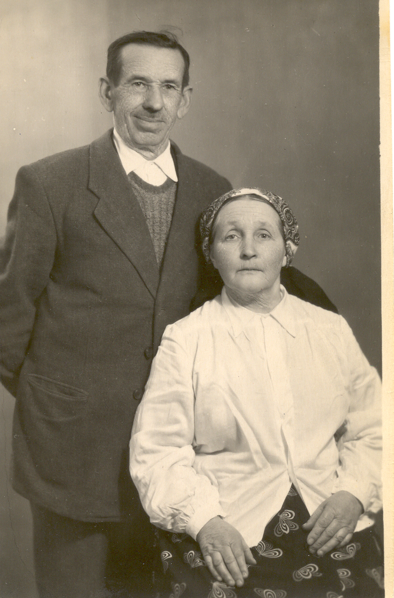

UKRAINE
Descendants of the DRAN family from Swiatkowa Wielka were removed from their ancestral village, beginning in 1945, and were transported 600 miles to the Kharkiv area of the USSR, a 6 week journey in a box car along with their two cows . My only current contact is with the descendants of Demetri Dran, my grandfather’s brother. Family stories tell of their transport. Somehow they were able to get everyone in that branch of the family out of Kharkiv and eventually to the town of Kalush, which is now in Ukraine. A few years ago I found a 20-year-old address on a Christmas card that I had saved. I sent a blind letter and to my surprise received a reply. The family is still living there. I am now in regular contact with that branch of the family. Surnames associated with this family are Cyrkot, Dran, Maihzych, Mishchenko, Jankovych, Tyrpak, Naglovskiy,Oliynik Wladyka. In 2006 I traveled to Uzhorod, Ukraine, and my 2nd cousin, Volodymyr Dran traveled from Kalush to meet me. Volodymyr is a grandson of Demetri Dran and my 2nd cousin. We exchanged photos that our fathers had taken in 1933 when my father visited the ancestral village (see diary).
I learned that in 1945 troops came to Swiatkowa to transport the village population. The family and any possessions they could carry were loaded onto trains and off to the USSR they went. At their destination, Volodymyr’s father, Nicholas Dran bought a horse and cart and drove the family back to the border in an attempt to return. The Polish border was tightly secured. The family proceeded to Kalush, Ukraine, where there were a few abandoned homes vacated by Polish citizens returning to Poland.
This is a photograph of Antoni Wladyka and Daria Nestor Wladyka. Daria was born to Wasyl Nestor and Julianna Dran Nestor but was raised by her uncle in Swiatkowa W., Demetri Dran. Her descendants live in Kalush, Ukraine.
In 2014 I traveled to Kalush to visit my two elderly 2nd cousins and their families. It was a very emotional meeting after so many years.
Return to menu